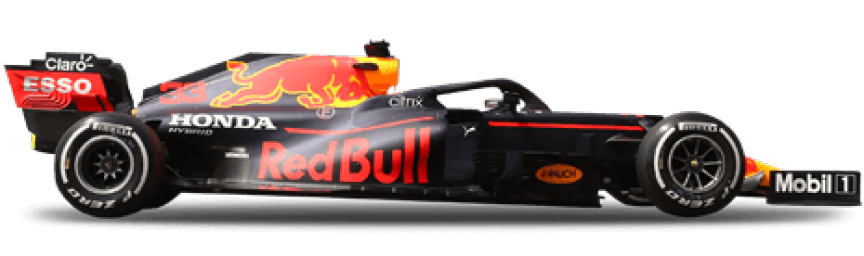
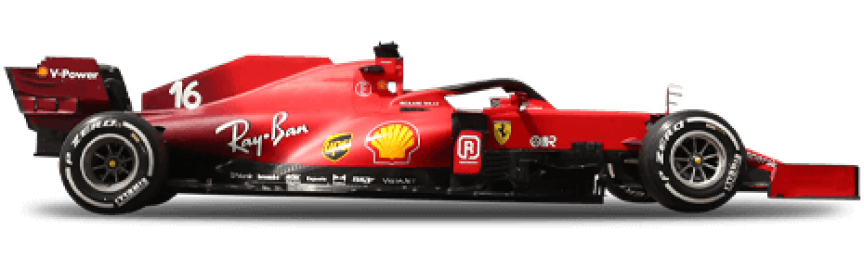
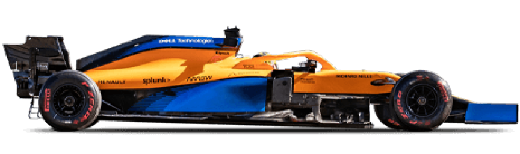
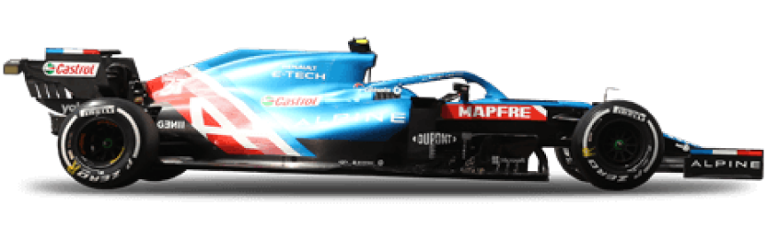
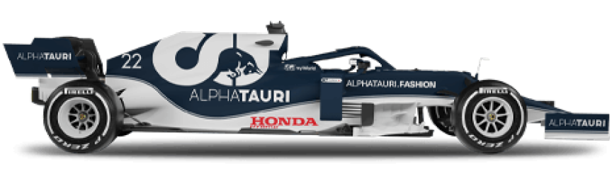
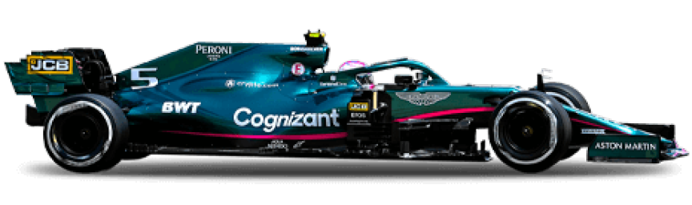
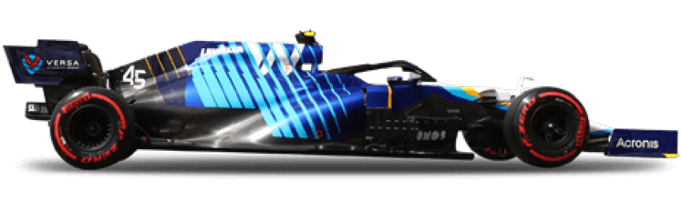
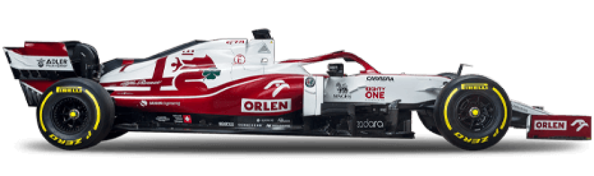
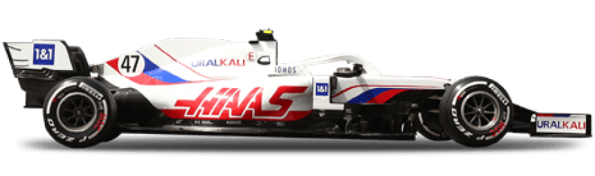

Mercedes-Benz es una de las automotrices más exitosas de la Fórmula 1, considerada uno de los cuatro equipos con
mejores resultados, junto con Williams, Ferrari y McLaren. Participó inicialmente como constructor en Fórmula 1 en
1954 y 1955, y volvió a hacerlo desde 2010 hasta la actualidad. El equipo alemán ganó los últimos ocho Campeonatos de
Constructores de forma consecutiva (de 2014 a 2021). Es la tercera escudería que posee más Campeonatos de Pilotos, con
nueve (1954, 1955, 2014, 2015, 2016, 2017, 2018, 2019 y 2020); ganados por Lewis Hamilton (6), Juan Manuel Fangio (2)
y Nico Rosberg (1). También es el tercer equipo en la historia con más victorias (124) y poles (135) en todos los ítems
anteriores, solamente por detrás de Ferrari y McLaren.
Mercedes-Benz es una de las automotrices más exitosas de la Fórmula 1, considerada uno de los cuatro equipos con
mejores resultados, junto con Williams, Ferrari y McLaren. Participó inicialmente como constructor en Fórmula 1 en
1954 y 1955, y volvió a hacerlo desde 2010 hasta la actualidad. El equipo alemán ganó los últimos ocho Campeonatos de
Constructores de forma consecutiva (de 2014 a 2021). Es la tercera escudería que posee más Campeonatos de Pilotos, con
nueve (1954, 1955, 2014, 2015, 2016, 2017, 2018, 2019 y 2020); ganados por Lewis Hamilton (6), Juan Manuel Fangio (2)
y Nico Rosberg (1). También es el tercer equipo en la historia con más victorias (124) y poles (135) en todos los ítems
anteriores, solamente por detrás de Ferrari y McLaren.
El chasis y motor son construidos por Mercedes. Daimler AG es la empresa propietaria de la escudería. Su director
actual es Toto Wolff y sus pilotos son el siete veces campeón mundial Lewis Hamilton y George Russell.
Además, la marca ha sido sido fabricante de motores para otras escuderías, teniendo sus mayores éxitos en otras
escuderías con McLaren a finales de los 90 y en los años 2000.
RED BULL RACING

Red Bull Racing es una escudería austriaca de Fórmula 1 con base en Milton Keynes (Inglaterra), propiedad de la
empresa de bebidas energéticas Red Bull. La compañía adquirió la escudería Jaguar Racing por cerca de 110 millones de
dólares cuando la propietaria anterior de este equipo, Ford Motor Company, anunció su retirada de la máxima categoría
del automovilismo. La empresa Red Bull posee un equipo filial de Fórmula 1, Scuderia AlphaTauri (conocida hasta 2019
como Scuderia Toro Rosso), con sede en Faenza (Italia), desde el que los jóvenes pilotos dan posteriormente el salto
al primer equipo. Compite desde 2005 y en sus dos primeras temporadas corrió con licencia británica.
Si bien la escudería debe su nombre a la empresa de bebidas Red Bull, la cual además de su propietaria es a su vez
su principal patrocinador, la denominación comercial del equipo ha recibido modificaciones en distintas temporadas,
incorporando a la misma el nombre de distintos patrocinadores de peso que han sabido cerrar acuerdo con la escudería.
Cuenta en su palmarés con cinco Mundiales de Pilotos (cuatro de Sebastian Vettel y uno de Max Verstappen) y cuatro
Mundiales de Constructores. Sus pilotos actuales son Max Verstappen y Sergio "Checo" Pérez.

Scuderia Ferrari es la división deportiva de automóviles Ferrari encargada de las competiciones de Fórmula 1. Ferrari
Corse Clienti se encarga desde hace poco de casi todas las otras actividades deportivas de la compañía y la atención a
equipos privados.
La primera participación de Ferrari en Fórmula 1 fue en el Gran Premio de Mónaco de 1950, con el Tipo 125 F1. Ferrari
es considerado uno de los cuatro grandes equipos de Fórmula 1, junto con Williams, McLaren y Mercedes. Es el equipo
activo más antiguo del campeonato, y es el que ha conseguido más victorias, campeonatos de pilotos (15) y campeonatos
de constructores (16). Ha contado con muchos de los pilotos más destacados de la historia de la Fórmula 1 como Michael
Schumacher, Niki Lauda, Juan Manuel Fangio, Alain Prost, Nigel Mansell, Gilles Villeneuve, Kimi Räikkönen, Sebastian
Vettel, Charles Leclerc y Fernando Alonso, entre otros. Los pilotos actuales son Carlos Sainz Jr y Charles Leclerc. El
director del equipo es Mattia Binotto.

McLaren Racing Limited, conocida generalmente como McLaren o, también, McLaren F1 Team, es una escudería británica de
automovilismo con sede en Woking (Surrey, Inglaterra), fundada en 1963 por Bruce McLaren. Es considerado uno de los
cuatro grandes equipos de Fórmula 1, junto con Williams, Ferrari y Mercedes. A lo largo de los años ha obtenido 8
Campeonatos de Constructores (tercera en el historial), 12 Campeonatos de Pilotos (segunda), 183 victorias (segunda),
155 poles (segunda) y 489 podios (segunda).
En su rol de constructor, McLaren también ha desarrollado automóviles de carreras para diversos campeonatos. El
equipo oficial de McLaren dominó la CanAm entre 1967 y 1971. Los monoplazas de McLaren también obtuvieron tres
victorias en las 500 Millas de Indianápolis de 1972, 1974 y 1976, dos de ellas con el equipo oficial. El equipo forma
parte del Grupo McLaren, fundado en 1989, que posee divisiones de tecnologías aplicadas, electrónica y otros rubros.
Entre los pilotos más destacados en la historia en McLaren se encuentran Emerson Fittipaldi, James Hunt, Johnny
Rutherford, Niki Lauda, Alain Prost, Ayrton Senna, Mika Häkkinen, Kimi Räikkönen, Fernando Alonso, Lewis Hamilton
o Jenson Button. Sus pilotos actuales son Lando Norris y Daniel Ricciardo.
ALPINE F1 TEAM
 Alpine F1 Team es una escudería francesa de Fórmula 1 con sede en Reino Unido y propiedad del Grupo Renault, que hizo su debut en la temporada 2021. Reemplazó a Renault para promocionar a Automobiles Alpine. Sus pilotos actuales son Fernando Alonso y Esteban Ocon.
 Scuderia AlphaTauri, más conocida simplemente como AlphaTauri, es una escudería italiana de Fórmula 1, propiedad de la empresa Red Bull. El constructor fue renombrado para el año 2020 de Toro Rosso a AlphaTauri para promocionar a la empresa de ropa del mismo nombre. Sus pilotos actuales son Pierre Gasly y Yuki Tsunoda.
ASTON MARTIN F1 TEAM
 Aston Martin es una escudería británica de Fórmula 1 que a finales de 2020 regresó, gracias a que Lawrence Stroll invirtió en Aston Martin £182 millones de libras, lo cual le proporcionó el 20 % de las acciones del fabricante, con tal movimiento decide usar la imagen de Aston Martin para convertir a partir de 2021 al equipo Racing Point en Aston Martin F1 Team. Actualmente tiene su base en Silverstone, Reino Unido. Sus pilotos actuales son Sebastian Vettel y Lance Stroll.

Williams Grand Prix Engineering Limited, comúnmente conocido como Williams Racing, es un equipo de Fórmula 1 creado
en 1977 por Frank Williams y Patrick Head.
Williams es considerado uno de los tres grandes equipos de Fórmula 1, junto con Ferrari y McLaren. La primera carrera
de la escudería fue en el Gran Premio de España de 1977, cuando el equipo corrió con un chasis March y Patrick Nève
como piloto. Williams comenzó a construir sus propios autos el año siguiente. El suizo Clay Regazzoni ganó la
primera carrera para el equipo en el Gran Premio de Gran Bretaña de 1979, mientras que en el Gran Premio de Gran
Bretaña de 1997, el canadiense Jacques Villeneuve ganó la carrera número 100 para el equipo. De esta manera,
Williams se convirtió en uno de los únicos tres equipos en Fórmula 1, junto con Ferrari y el también inglés McLaren,
en ganar 100 carreras.
Siete pilotos han sido campeones mundiales con Williams: Alan Jones, Keke Rosberg, Nelson Piquet, Nigel Mansell,
Alain Prost, Damon Hill y Jacques Villeneuve. A su vez, el equipo ganó 9 Campeonatos de Constructores entre 1980 y
1997. Este fue un récord hasta que Ferrari lo superó en el año 2000.
Williams ha trabajado con muchos constructores de motores, pero más satisfactoriamente con Renault: Williams ganó 5 de
sus 9 Campeonatos de Constructores con la casa francesa.
Todos los autos de Williams son llamados "FW-número", por las iniciales del cofundador del equipo, Frank Williams.
Además de Fórmula 1, Williams también participó en otros campeonatos de automovilismo, tanto como constructor como
equipo.
En 2020, tras más de 40 años de participación y a pesar del prestigio cosechado en el ámbito de la Fórmula 1, el
equipo fue adquirido por el holding financiero Dorilton Capital, quienes compraron el equipo a la familia Williams
en agosto y presentaron a su nueva junta directiva en septiembre. Sus pilotos actuales son Alexander Albon y Nicholas Latifi.
 Alfa Romeo ha participado como una escudería de Fórmula 1 en diferentes periodos. Antes de su retorno como equipo constructor en 2019, tras renombrar la estructura de Sauber y asumir la licencia suiza, participó en los campeonatos de las temporadas 1950, 1951 y entre 1979 y 1985 como escudería italiana. Sus éxitos se dieron principalmente antes del establecimiento del Campeonato del Mundo y en los dos primeros años de este, no consiguiendo en su vuelta reverdecer los laureles. Ya en los años 1920, algunos Alfa competían en los circuitos europeos y bien pronto se constituyó un equipo oficial de la marca dirigido por el propio Nicola Romeo, en el que corrieron grandes pilotos de la época como Giuseppe Campari, Ugo Sivocci, Antonio Ascari, Enzo Ferrari, Gastone Brilli-Peri o Louis Wagner. Sus pilotos actuales son Valtteri Bottas y Guanyu Zhou.

Haas F1 Team, anteriormente conocido bajo el nombre de Haas Racing Developments, es un equipo estadounidense de
carreras de Fórmula 1 construido por el empresario y copropietario del equipo Stewart-Haas Racing de la NASCAR
Sprint Cup Series, Gene Haas, tras tener la propuesta de Guenther Steiner y que fue fundado y aprobada su entrada
por la comisión de la FIA y por Bernie Ecclestone en el mes de abril de 2014. El equipo debutó en la temporada 2016.
Sus pilotos actuales son Mick Schumacher y Nikita Mazepin.
Haas tiene su sede en Kannapolis, Carolina del Norte, junto a las instalaciones del equipo filial de la NASCAR Cup
Series, el Stewart-Haas Racing.
A partir de la temporada 2021 la empresa química Uralkali se convierte en el principal patrocinador del equipo, lo
cual hace que el equipo pase a llamarse Uralkali Haas F1 Team a partir de 2022.